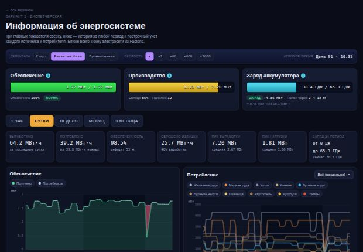
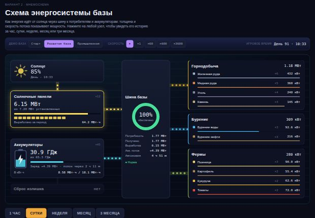
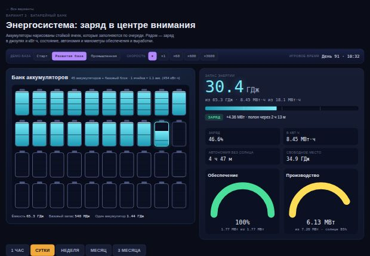
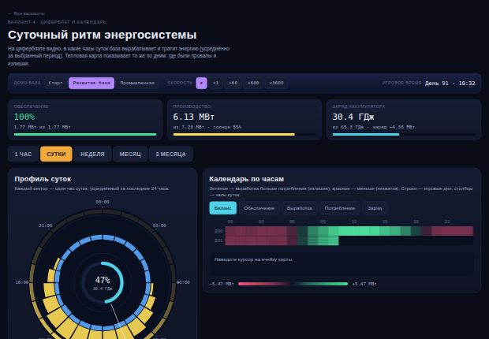
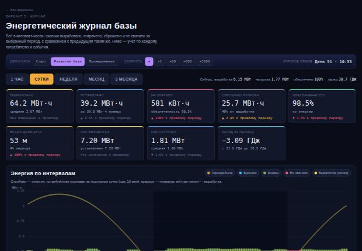

Все страницы живые: на демо-базе идёт игровое время, растёт история, единицы переключаются сами (кВт → МВт → ГВт, Дж → МДж → ГДж, кВт·ч → МВт·ч → ГВт·ч). Наверху каждой страницы можно выбрать размер базы и скорость времени.




